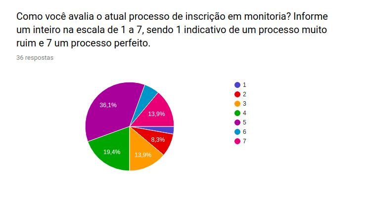
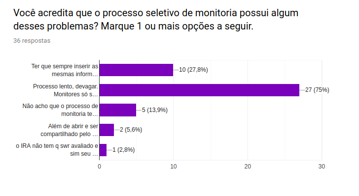
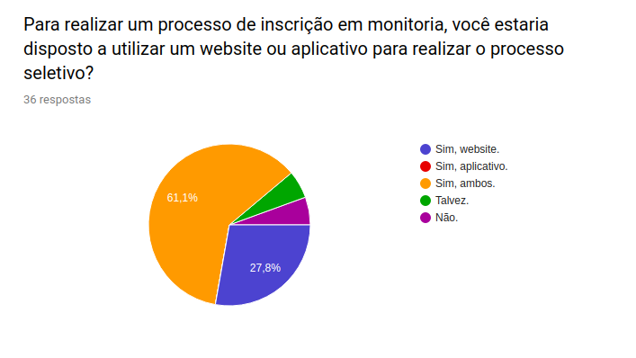
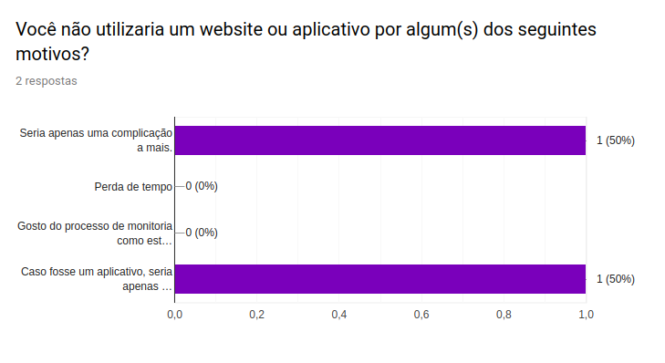
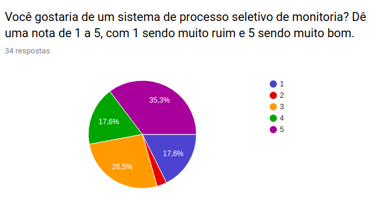
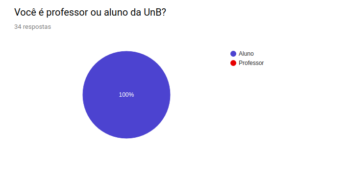
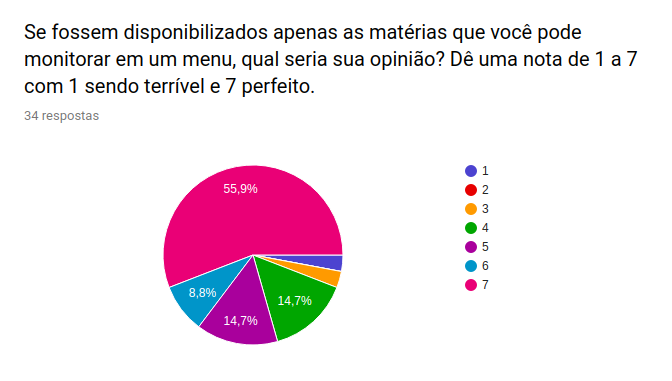
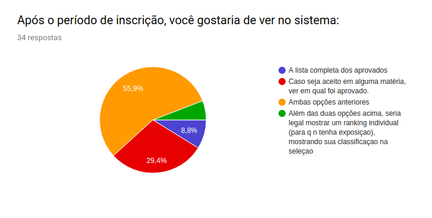

Análise Questionário
| Data | Versão | Descrição | Autor(es) |
|---|---|---|---|
| 28/08/19 | 0.1 | Criação da análise do questionário | Ivan Dobbin |
| 28/08/19 | 0.2 | Adição dos gráficos para a análise do questionário | Ivan Dobbin |
| 28/08/19 | 0.3 | Adição da análise do tronco comum do questionário | Welison Regis |
Introdução
Esta análise foi feita com o intuito de entender quais foram as opniões de nosso público alvo e assim poder se necessário realizar mudanças na ideia do projeto.
Análise
Tronco comum
Questão 01 - Pergunta

Questão 01 - Análise
Conforme pode-se notar, a questão obteve 36 respostas. Observa-se que o público-alvo entende que o processo seletivo atual de monitoria é razoável, pois aproximadamente 70% das notas concentram-se no intervalo de [3, 5]. Além disso, apenas 13,9% dos entrevistados consideram que o processo seletivo de monitores é perfeito, o que evidencia que há muito a melhorar em muitos aspectos do processo.
Questão 02 - Pergunta

Questão 02 - Análise
Sobre os aspectos negativos sobre o atual processo seletivo de monitores, pode-se notar razões comuns entre os entrevistados. Pela análise do gráfico, entende-se que o "processo é lento, devagar. Monitores só são disponibilizados depois de 2 semanas". Além disso, elenca-se como outro fator negativo o fato da "necessidade de preenchimento de informações repetidas vezes, todos os semestres".
Questão 03 - Pergunta

Questão 03 - Análise
De acordo com o gráfico, há uma preferência maior pela disponibilidade da aplicação de processo seletivo em monitoria em ambas as plataformas, isto é, mobile e desktop. Porém, é possível notar também que, ao confrontar a preferência entre as plataformas, a aplicação desenvolvida em ambiente web possui maior preferência.
Ramificação Usuário que não deseja utilizar aplicativo nem website

Ramificação Usuário que deseja utilizar um aplicativo ou website


SubRamificação Aluno


SubRamificação Professor
Não foi possível fazer análise dessa subramificação pois não houve amostra deste tipo de público para a pesquisa.
Questao final comum a todos
Agora, escreva um pequeno texto sobre os piores aspectos do processo de inscrição em monitoria. Você possui alguma sugestão?
13 respostas
| Respostas |
|---|
| melhorar a divulgaçao de inicio da seleçao, menos exposiçao do aluno, informar apenas o nome dos monitores para o professor, acho q só |
| Não demorar para sair o resultado |
| Não |
| Processo demorado demais |
| Demora de lançar as inscrições e resultados |
| Alguns monitores não aparecem para dar apoio, outros nem mesmo sabem a matéria direito. |
| Atualmente melhorou bastante em relação a antes. |
| Todo semestre é um link diferente. Eu não tenho ideia se eu estou próximo ou distante de conseguir a vaga. |
| O fato de mostrar a pontuação de todos os aprovados é muito ruim. |
| O processo quase não lida com o professor, sendo que diversas vezes o professor sabe que o aluno esta preparado mas tem que passar por toda uma burocracia desnecessária pra conseguir a vaga |
| Deve averiguar se o monitor entende minimamente conceitos críticos das matérias. Além de ser capaz de transmitir seus conhecimentos, e se tem algum nível de organização para poder responder e marcar monitorias. |
| O pior problema em minha opinião é a falta de esclarecimento acerca de quantas vagas existem pra monitorar uma dada disciplina, bem como a falta da possibilidade de visualizar a atual fila de inscritos para monitorar essa disciplina, ordenada por quem tem mais chances de conseguir a vaga. |